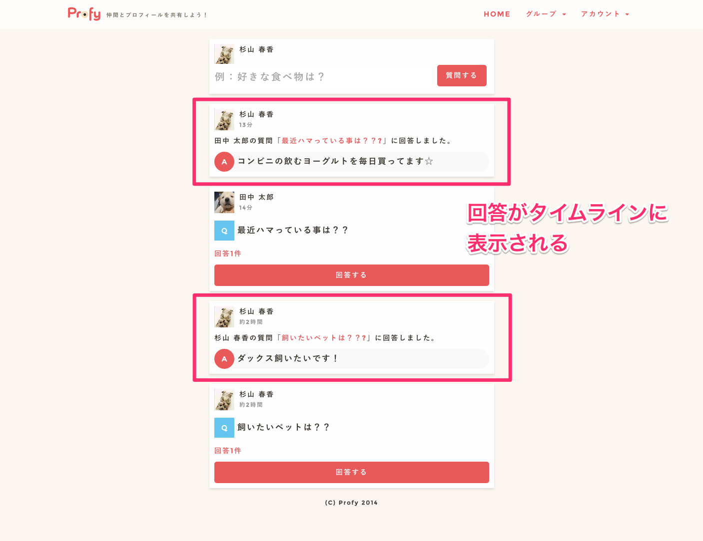
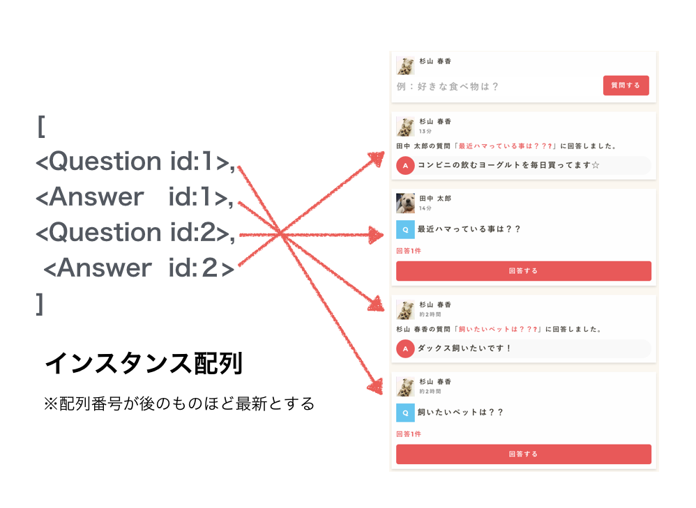
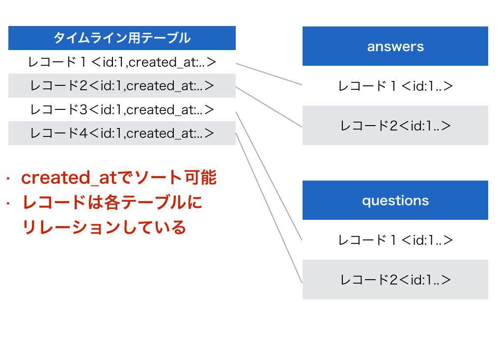
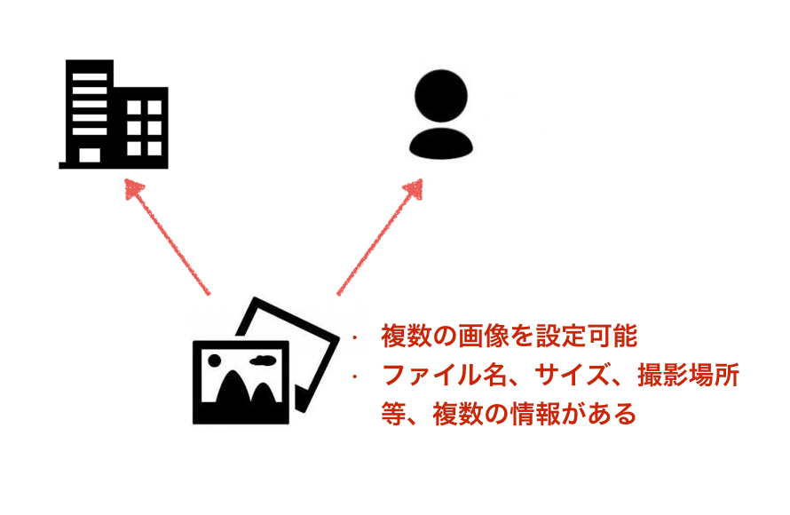
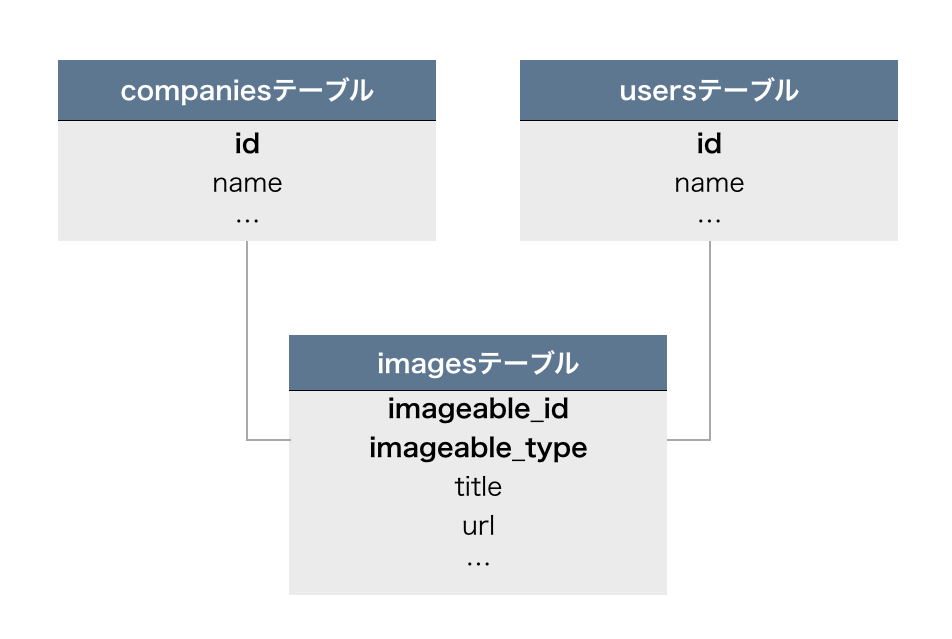
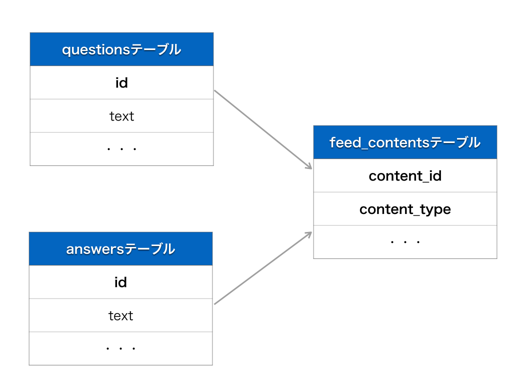
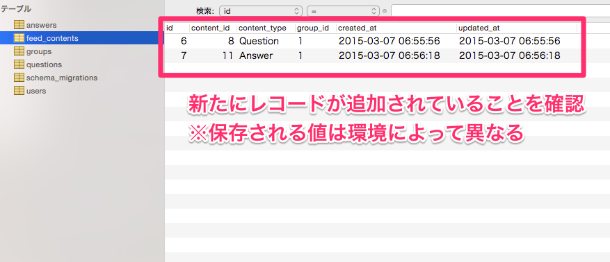
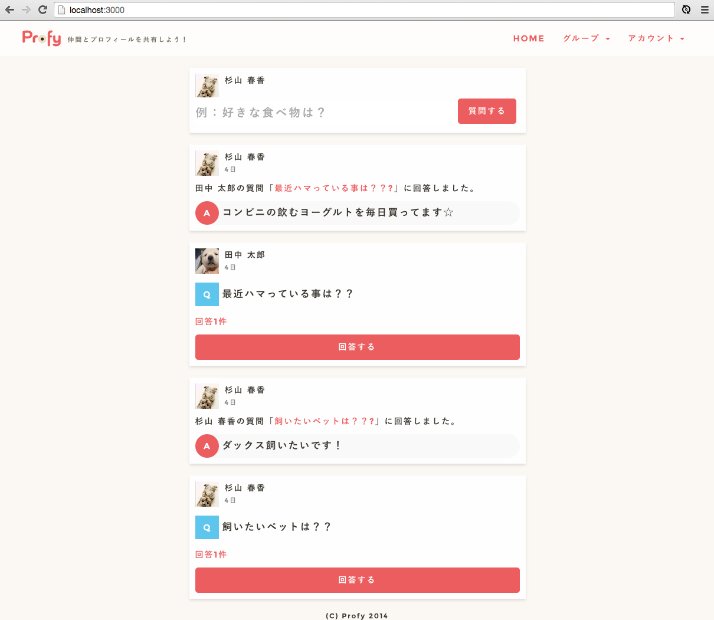

- 終了まであと10日
 大宅 誠人
大宅 誠人
大宅 誠人今の仕様だと回答を見たくても、度々、個別質問ページに行かないと回答が見ることができないため
少し面倒です。このままですと回答を見落としてしまう可能性もあります。そこで質問への回答をタイムラインにも流すようにしようと思います。

タイムラインに回答と質問を表示するためには、質問と回答が時系列順で入ったインスタンス配列を作成する必要があります。

どうやったらこのインスタンス配列がつくれるか考えていきましょう。
厳密には「インスタンスの配列」ではなくActiveRecord_Relationのインスタンスですがここでは便宜上、インスタンスの配列と呼ぶことにします。
１つのテーブルからインスタンスを取得して表示するのは簡単でした。
例えば、以下の様にすれば、そのグループの質問を取得できます。
1 |
@questions = Question.where(group_id: 1).order(updated_at: :desc)
|
では、group_idが1のanswersのレコードを取得するにはどうしたらいいと思いますか。
answers自体にはgroup_idカラムはありません。answersとリレーションしているquestionsのレコードがgroup_idを持っています。
アソシエーションを利用すれば以下のような記述で特定のgroup_idのanswersのレコードを取得できます。
1 |
@answers = Answer.includes(:question).where(questions:{group_id:1}).order(updated_at: :desc)
|
上２つの方法を使えば質問と回答のインスタンス配列を別々に取得することができます。
しかし、今回やりたいことは時系列で並び変えて１つの配列にすることです。例えば以下のようにrubyのメソッドを駆使して
２つの配列を１つにまとめ並び変えることは、できなくはないです。(以下のコード自体は理解する必要はありません)
1 2 3 4 5 6 7 8 9 10 11 12 13 14 15 16 17 |
@questions = Question.where(group_id: 1).order(updated_at: :desc)
@answers = Answer.includes(:question).where(questions:{group_id:1}).order(updated_at: :desc)
@answers = @answers.to_a
new_array = []
@questions.each do |question|
tmp_answers = @answers.dup
tmp_answers.each do |answer|
if answer.updated_at > question.updated_at
new_array << @answers.shift unless @answers.empty?
#shiftメソッドは、配列の最初の要素を削除し、その要素を返します。
else
new_array << question
break
end
new_array << question if @answers.empty?
end
end
|
しかしこの方法だとコードが長くなってしまいますし、ページネーションを実現するのが難しくなります。
そして、最もクリティカルな問題は質問、回答以外のインスタンスが増えたときにどんどん処理が複雑になっていくことです。
よりスマートにまとめるために、タイムライン用のテーブルを１つ用意してそこからレコード毎に質問や回答にリレーションさせるという方法があります。
以下のようなイメージです。

今説明したイメージを実現するためにポリモーフィック関連というrailsの仕組みを利用します。
ポリモーフィックは、関連付けのやや高度な応用です。ある1つのモデルが他の複数のモデルに属していることを、1つのアソシエーション定義だけで表現することができます。例えば、画像をアップロードして、ユーザーの画像や企業の画像に設定できるサービスがあるとします。アップロードされた画像は、ユーザーの画像もしくは企業の画像として紐付けられます。

画像はファイル名や大きさ、撮影した場所なども情報として持っているので、企業の画像に設定するにしろ、ユーザー個人の画像に設定するにしろ、１つのテーブルでまとめて管理したいです。
通常のアソシエーションを利用して以下のように定義することもできます。
1 2 3 4 5 6 7 8 9 10 11 12 |
class Image < ActiveRecord::Base
belongs_to :company
belongs_to :user
end
class Company < ActiveRecord::Base
has_many :images
end
class User < ActiveRecord::Base
has_many :images
end
|
この定義には幾つか問題があります
これらの問題を解決するために、ポリモーフィック関連を利用します。
ポリモーフィック関連を利用すると以下のように定義できます。
1 2 3 4 5 6 7 8 9 10 11 |
class Image < ActiveRecord::Base
belongs_to :imageable, polymorphic: true
end
class Company < ActiveRecord::Base
has_many :images, as: :imageable
end
class User < ActiveRecord::Base
has_many :images, as: :imageable
end
|
テーブルのカラムは以下のようになります。

imageable_typeには「Company」や「User」のような所属するクラス名が、imageable_idにはリレーションしているインスタンスのidが格納されます。
ポリモーフィック関連の定義により以下の様に利用することができます。
imageableに注目してください。この名前に特に決まりはないのですが~ableとつけるのが慣例となっています。
1 2 3 4 5 6 7 8 9 |
#例1:Companyモデルに帰属する複数の画像を取得する
company = Company.find(1)
company.images
#=> [<Image id:1 ..>,<Image id:2 ..>]
#例2:Userモデルに帰属する複数の画像を取得する
user = User.find(1)
user.images
#=> [<Image id:3 ..>,<Image id:4 ..>]
|
例1、例2は、has_many定義により帰属する画像を取得しています。通常のアソシエーションとの違いは、親であるcompany, もしくはuserのidを保持するカラムはあるが、それがcompany_idやuser_idといった名前ではない、という点です。
1 2 3 4 5 6 7 8 9 |
#例3:Imageモデルが帰属するインスタンスを取得する(帰属先が企業の場合)
image = Image.find(1)
image.imageable
#=> <Company id:1 ..>
#例4:Imageモデルが帰属するインスタンスを取得する(帰属先がユーザーの場合)
image = Image.find(2)
image.imageable
#=> <User id:1 ..>
|
例3、例4は、Imageが帰属するインスタンスを取得しています。image.imageableと記述するだけで関連先のインスタンスを取得することができます。ここで重要なのは、Imageクラスのインスタンスがどのモデルに帰属しているかが分からなくても.imageableと記述するだけで関連先のインスタンスを取得できるという点です。
1 2 3 4 5 6 7 8 9 |
#例5: Companyモデルに帰属するImageクラスのインスタンスを作成する
company = Company.create
Image.create(imageable_id: company.id,imageable_type: company.class.to_s)
#=> INSERT INTO `Images` (`imageable,_id`, `imageable,_type`, `created_at`, `updated_at`) VALUES (1, 'Company', '2015-0x-0x..', '2015-0x-0x..')
#例6: Companyモデルに帰属するImageクラスのインスタンスを作成する
company = Company.create
company.images.create
#=> INSERT INTO `Images` (`imageable,_id`, `imageable,_type`, `created_at`, `updated_at`) VALUES (1, 'Company', '2015-0x-0x..', '2015-0x-0x..')
|
例5と例6は、同じ処理を意味しています。
例5はcreateしたCompanyクラスのインスタンスのidとクラス名を利用して、新たにImageをcreateしています。例6はポリモーフィック関連を利用して、Imageクラスを作成しています。
company.images.createこの部分は違和感を覚えるかもしれませんが、Companyに帰属するImagesのインスタンスを1つ作成した（レコードを追加した）という意味です。
company.imagesは複数なのに、なんでcreateが動かせるの？と疑問に思われる方もいるかもしれません。ただ、ここはポリモーフィックの文法なので覚えてしまいましょう。例5と違い、帰属するインスタンスのidやクラス名を入力しなくて良いというメリットがあります。
それでは、ポリモーフィック関連を利用して二種類の配列をrubyで並びかえるよりスマートに実装していきましょう。
タイムライン用のモデル名はFeedContentとします。
モデル名は、複数形にできる名前にします。例えば TimeLine だとモデル名とテーブル名がうまく噛み合わなくなります
1 |
$ rails g model feed_content
|
rake db:migrateを実行してください。1 2 3 4 5 6 7 8 9 10 |
class CreateFeedContents < ActiveRecord::Migration
def change
create_table :feed_contents do |t|
t.integer :content_id
t.string :content_type
t.integer :group_id
t.timestamps
end
end
end
|
feed_contentsテーブルには、質問、回答それぞれと同じupdated_at、group_idを保存します。これらは、最終的にタイムラインを取得する際に必ず必要なカラムです。
前述のポリモーフィック関連の解説では~ableという名前にしていました。今回もfeed_contentable_id、feed_contentable_typeとしても問題ないのですが少し長くなってしまうのでcontentという名前を使っていきます。
これから下記の通りのような関係でポリモーフィック関連を定義していきます。

1 2 3 |
class FeedContent < ActiveRecord::Base
ポリモーフィック関連の定義で一つのcontentに紐づくよう編集する。
end
|
1 2 3 4 5 6 7 |
class Question < ActiveRecord::Base
#association
belongs_to :user
belongs_to :group
has_many :answers, dependent: :destroy
#ポリモーフィック関連の定義でひとつのfeed_contentに紐づくよう編集する。dependentオプションも追加する。
|
1 2 3 4 5 |
class Answer < ActiveRecord::Base
#association
belongs_to :question
belongs_to :user
#ポリモーフィック関連の定義でひとつのfeed_contentに紐づくよう編集する。dependentオプションも追加する。
|
ポリモーフィック関連を利用するためには、質問及び回答が投稿された時にFeedContentを同時に追加する必要があります。
例えば質問を投稿する場合、以下の様な実装が考えられます。
1 2 3 4 5 6 |
class QuestionsController < ApplicationController
def create
question = Question.create(create_params)
question.feed_content = FeedContent.create(group_id: question.group_id, updated_at: question.updated_at)
redirect_to :root and return
end
|
この実装方法はあまり好ましくありません。なぜなら、他のコントローラーでQuestion.createを使う場合に必ず続けてquetsion.feed_content = FeedContent.createを記述する必要があるからです。またクラスというのは本来責任分担のために存在します。「Questionを作成したときは必ずFeedContentを更新する」という決まりはQuestionモデルクラスが担うべきです。このような場合はモデルのコールバックを利用するといいでしょう。
ActiveRecordコールバックとは、作成/保存/更新/削除/検証/等、特定のイベント発生時に呼び出されるメソッドのことです。
例えば、「Userクラスのインスタンスが新規作成される前に、必ず友人招待用のランダムなコードを設定する」といったことができます。実際のコードを見ていきましょう。
1 2 3 4 5 6 7 8 9 10 11 |
class User < ActiveRecord::Base
before_create :set_invitation_code
private
def set_invitation_code
self.invitation_code = SecureRandom.hex(2) #ランダムな英数字を生成する
end
end
user = User.create
p user.invitation_code #=> "81de"
|
before_createは、モデルが新規作成される前に呼び出されるコールバックです。
このコールバックを設定することによりUserを新規作成したときは、必ず招待コードが設定されます。
コールバックは、呼び出されるタイミングの違いで非常に多くの種類があります。いま全てを覚える必要はないのでざっと目を通しておいてください。
オブジェクトの作成
オブジェクトの更新
オブジェクトのdestroy
それでは、質問、回答の新規投稿時にもコールバックでFeedContentがcreateされるように実装していきます。
11 12 13 14 15 16 17 18 19 20 21 |
#callback
after_create :create_feed_content
def user_answer(user_id)
Answer.find_by(user_id: user_id, question_id: id)
end
private
def create_feed_content
self.feed_content = FeedContent.create(group_id: group_id, updated_at: updated_at)
end
|
6 7 8 9 10 11 12 13 14 15 |
#callback
after_create :create_feed_content
#validation
validates_presence_of :user_id, :text
private
def create_feed_content
self.feed_content = FeedContent.create(group_id: question.group_id, updated_at: updated_at)
end
|
questionsテーブルとanswersテーブルを一度全て空にして実行してください。
user_idとquestion_idはそれぞれusersテーブル、questionsテーブルに存在するid番号にしてください。前の作業で一度questionsテーブルを空にしているためidが1から始まることはありません。現在は例として5を入れています。
1 2 3 4 5 6 7 8 9 10 11 12 13 14 |
Question.create(user_id: 1, group_id: 1, text: "test")
(0.2ms) BEGIN
SQL (3.0ms) INSERT INTO `questions` (`user_id`, `group_id`, `text`, `created_at`, `updated_at`) VALUES (1, 1, 'test', '201xx..', '201xx..')
SQL (0.3ms) INSERT INTO `feed_content` (`group_id`, `created_at`, `content_id`, `content_type`, `updated_at`) VALUES ('1', '201xx..', 7, 'Question', '201xx..')
(0.8ms) COMMIT
=> <Question:0x007fa1b0a372e0 id: 7, user_id: 1, text: "test", group_id: 1, created_at: Sat, 0x Mar 201xxx, updated_at: Sat, 0x Mar 201xxx>
Answer.create(question_id: 5, user_id: 1, text: "test")
(0.2ms) BEGIN
SQL (0.3ms) INSERT INTO `answers` (`question_id`, `user_id`, `created_at`, `updated_at`) VALUES (1, 1, '201xx..', '201xx..')
Question Load (0.4ms) SELECT `questions`.* FROM `questions` WHERE `questions`.`id` = 1 ORDER BY created_at DESC LIMIT 1
SQL (0.3ms) INSERT INTO `feed_content` (`group_id`, `created_at`, `content_id`, `content_type`, `updated_at`) VALUES ('1', '201xx..', 10, 'Answer', '201xx..')
(1.5ms) COMMIT
=> <Answer:0x007fa1addbcaf8 id: 10, question_id: 1, user_id: 1, text: nil, created_at: Sat, 0x Mar 201xxx, updated_at: Sat, 0x Mar 201xxx>
|
以下のようにfeed_contentsテーブルにレコードが追加されていればコールバックに成功しています。

1 2 3 4 5 6 7 8 9 10 11 12 13 14 |
feed_contents = FeedContent.all
FeedContent Load (0.4ms) SELECT `feed_contents`.* FROM `feed_contents`
=> [#<FeedContent:0x007fa1ab0cd8f8 id: 6, content_id: 8, content_type: "Question", group_id: "1",...>,
#<FeedContent:0x007fa1ab0cd588 id: 7, content_id: 11, content_type: "Answer", group_id: "1", ...>]
feed_contents.each do |feed_content| puts "---------"; p feed_content.content; end
---------
Question Load (0.4ms) SELECT `questions`.* FROM `questions` WHERE `questions`.`id` = 8 LIMIT 1
#<Question id: 8, user_id: 1, text: "test", group_id: 1, created_at: "2015-03-07 06:55:56", updated_at: "2015-03-07 06:55:56">
---------
Answer Load (0.4ms) SELECT `answers`.* FROM `answers` WHERE `answers`.`id` = 11 LIMIT 1
#<Answer id: 11, question_id: 8, user_id: 1, text: nil, created_at: "2015-03-07 06:56:18", updated_at: "2015-03-07 06:56:18">
=> [#<FeedContent:0x007fa1ab0cd8f8 id: 6, content_id: 8, content_type: "Question", group_id: "1", ... >,
#<FeedContent:0x007fa1ab0cd588 id: 7, content_id: 11, content_type: "Answer", group_id: "1", ... >]
|
FeedContentクラスのインスタンス配列をeachで回して、それぞれがリレーションしているモデルのインスタンスを取得することができました。
タイムラインで利用するイメージはもてたでしょうか。
ここまで問題なければ、feed_contents,answers,questionsテーブルを空にしておきましょう。
トップページでタイムラインを表示するために、ログインユーザーが所属するグループのFeedContentを取得する必要があります。
GroupからのアソシエーションでFeedContentを取得できるようにしましょう。
1 2 3 4 5 6 |
class Group < ActiveRecord::Base
#association
has_many :users
has_many :questions, ->{ order("updated_at DESC") }
has_many :feed_contents, ->{ order("updated_at DESC") }
|
1 2 3 4 5 6 7 |
class TopController < ApplicationController
def index
@question = Question.new
feed_contents = 現在ログインしているユーザーのfeed_contentを複数取得する
@feed_contents = feed_contentsからそれぞれcontentのみ取得する
end
end
|
ここまでの実装で、QuestionとAnswerのインスタンス配列をビューに渡すことができました。
タイムラインのビューはインスタンスの種類によってビューを出し分けたいと思います。
app/views/top/index.html.erbを以下のように更新してください。8 9 10 11 12 13 14 15 16 17 18 19 20 21 |
<div class="posting_form top_content">
<header class="posting_header">
<div class="posting_image icon_image" style="background-image: url(<%= current_user.avatar.url(:medium) %>);"></div>
<div class="posting_user_info user_info">
<%= current_user.name %>
</div>
</header>
<%= form_for(@question) do |f| %>
<%= f.text_field :text, placeholder: "例：好きな食べ物は？" %>
<%= f.submit "質問する" %>
<% end %>
</div>
<%= render @feed_contents %>
|
renderメソッドにインスタンス配列を渡した時は、インスタンスに応じて部分テンプレートを自動で呼び出し分けてくれます。
つまり、Answerのインスタンスだった場合は、app/views/answers/_answer.html.erbを呼び、Questionのインスタンスだった場合はapp/views/questions/_question.html.erbを呼び出します。ここまで自動でやってくれるなんて素晴らしいですね！
回答の部分テンプレートを作成します。
app/views/answers/_answer.html.erbを作成してください。app/views/answers/_answer.html.erbを以下のように更新してください。1 2 3 4 5 6 7 8 9 10 11 12 13 14 15 16 17 18 19 20 21 22 23 24 25 26 27 28 |
<div class="answer_content top_content">
<header class="answer_header">
<div class="answer_image icon_image" style="background-image: url(<%= answer.user.avatar.url(:medium) %>);"></div>
<div class="answer_user_info user_info">
<span><%= link_to answer.user.name, user_path(answer.user) %></span>
<time><%= time_ago_in_words answer.updated_at %></time>
</div>
</header>
<div class="answer_body">
<div class="answerd">
<%= answer.question.user.name %>の質問「<%= link_to answer.question.text, question_path(answer.question) %>」に回答しました。
</div>
<div class="answer_box">
<span class="a">A</span>
<span class="answer_text"><%= answer.text %></span>
<% if answer.user_id == current_user.id %>
<small class="edit">
<%= link_to '編集', edit_answer_path(answer) %>
</small>
<% end %>
</div>
<% if answer.question.answers.count > 1 %>
<div class="answer_other">
<%= link_to "他#{answer.question.answers.count - 1}件の回答を見る", question_path(answer.question) %>
</div>
<% end %>
</div>
</div>
|
マイページでも実装した回答編集機能を、トップページでも実現しています。
所定の回答が持つuser_idが、現在ログインしているユーザーのidと一致する回答にのみ編集リンクを表示しています。
以上でタイムラインに回答を表示するための実装は終了です。
rails sでサーバーを起動してタイムラインに回答が表示されることを確認してください。feed_contents, answers, questionsテーブルは一度空にして、質問と回答は新たに投稿してください。

現在タイムラインは、次のような流れで質問や回答が生成された順に並んでいます。
質問または回答が生成されたタイミングで各モデルに記載したafter_createコールバックが働く
働いたコールバックによりfeed_contentsテーブルにも質問または回答の情報が追加される
feed_contentsモデルから更新日降順で取得されたデータがトップページに渡される
各要素がQuestionモデルかAnswerモデルのどちらに紐づくのかが判別され、対応した部分テンプレートが呼び出されタイムラインに表示される
つまり、現在は質問や回答が最初に作成された順番で並んでしまい、回答に編集を加えてもタイムラインのいちばん上に出てこない状態です。

せっかく編集したのですから、いちばん上に出てきてほしいですよね。タイムラインはfeed_contentsの中身を更新日降順で取得し表示しているため、回答を更新したタイミングで、feed_contentsの対応する更新日(updated_at)にも更新がかかるようにしてあげる必要がありそうです。
app/models/answer.rbを以下のように更新してください。1 2 3 4 5 6 7 8 9 10 11 12 13 14 15 16 17 18 19 20 21 |
class Answer < ActiveRecord::Base
belongs_to :question
belongs_to :user
has_one :feed_content, as: :content, dependent: :destroy
## callback
after_create :create_feed_content
after_update :update_feed_content
## validation
validates_presence_of :user_id, :text
private
def create_feed_content
self.feed_content = FeedContent.create(group_id: question.group_id, updated_at: updated_at)
end
def update_feed_content
self.feed_content.update(updated_at: updated_at)
end
end
|
タイムラインを作成した際に設定したのと同様にafter_updateと、回答に更新が加えられたタイミングでもコールバックを設定しています。
ここでのupdated_atは「self.updated_at」を省略した形で、コールバックが働いた際のレシーバーである回答の更新日時を表します。

編集した回答がきちんといちばん上に表示されたでしょうか。これで目標とするタイムラインをつくることができましたね。